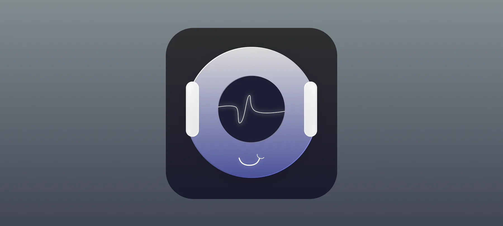

Mutex
Turning music into a living, interactive brain-network — a native iOS app that visualizes sound in real time.

Role
Solo iOS Developer
Platform
iOS
Status
Private development
Stack
SwiftUI · Combine
Overview
Mutex explores what music could look like if you could see it think. As a track plays, the app analyzes the audio in real time and maps it onto an interactive, brain-network-style visualization — nodes pulse, connect, and reorganize in sync with the sound, turning listening into something you can watch unfold.
How it's built
- AVFoundation handles real-time audio capture and analysis, feeding frequency and amplitude data into the visualization layer as the track plays.
- Accelerate / vDSP does the heavy lifting on the signal-processing side, keeping that analysis fast enough to stay in sync with playback.
- Combine pipes the processed audio data through a reactive stream, so the interface updates smoothly without blocking the UI thread.
- MVVM keeps the visualization logic testable and separate from the SwiftUI views, which focus purely on rendering.
- SwiftUI drives the interactive network canvas, with custom animations tied directly to the incoming audio signal.
Focus areas
The core challenge was performance: keeping the visualization fluid while continuously processing audio, without introducing lag between what's heard and what's seen. Accessibility was built in rather than bolted on — VoiceOver support and refined navigation mean the app holds up beyond sighted use, not just as a visual showpiece.
Currently in private development
A public build and demo video are on the way. In the meantime, feel free to reach out for a walkthrough.